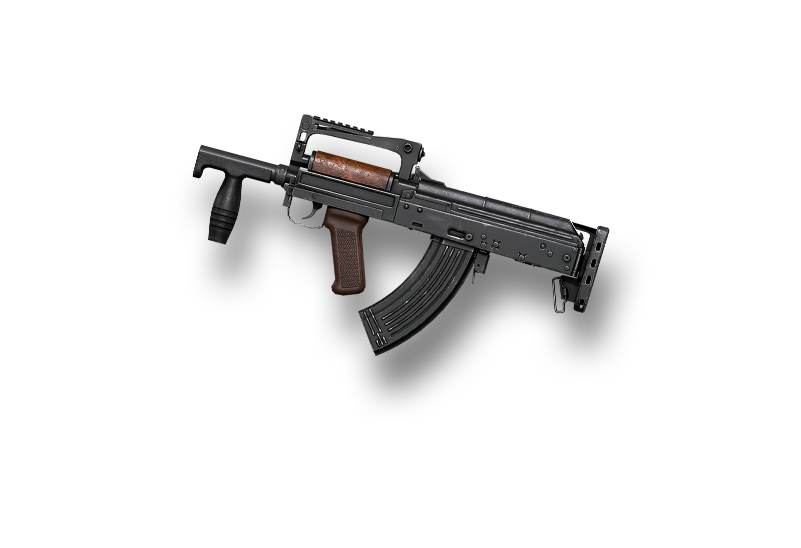

Avval shuni yodda tutingki, M416 ko'p qirrali bo'lishdan tashqari, barcha turdagi aksessuarlarni qo'llab-quvvatlaydi. Siz qurolingizni barrel, tutqich, jurnal, zaxira va ko'lamini yangilash bilan jihozlashingiz mumkin. Ushbu maqolada biz M416 so'ragan har bir pozitsiya uchun barcha aksessuarlardan qaysi biri eng yaxshisi ekanligini ko'rib chiqamiz.
Avval shuni yodda tutingki, Beryl M762 ko'p qirrali bo'lishdan tashqari, barcha turdagi aksessuarlarni qo'llab-quvvatlaydi. Siz qurolingizni barrel, tutqich, jurnal, zaxira va ko'lamini yangilash bilan jihozlashingiz mumkin. Ushbu maqolada biz Beryl M762 so'ragan har bir pozitsiya uchun barcha aksessuarlardan qaysi biri eng yaxshisi ekanligini ko'rib chiqamiz.

Avval shuni yodda tutingki, GROZA ko'p qirrali bo'lishdan tashqari, barcha turdagi aksessuarlarni qo'llab-quvvatlaydi. Siz qurolingizni barrel, tutqich, jurnal, zaxira va ko'lamini yangilash bilan jihozlashingiz mumkin. Ushbu maqolada biz GROZA so'ragan har bir pozitsiya uchun barcha aksessuarlardan qaysi biri eng yaxshisi ekanligini ko'rib chiqamiz.
Avval shuni yodda tutingki, DBS ko'p qirrali bo'lishdan tashqari, barcha turdagi aksessuarlarni qo'llab-quvvatlaydi. Siz qurolingizni barrel, tutqich, jurnal, zaxira va ko'lamini yangilash bilan jihozlashingiz mumkin. Ushbu maqolada biz DBS so'ragan har bir pozitsiya uchun barcha aksessuarlardan qaysi biri eng yaxshisi ekanligini ko'rib chiqamiz.
Avval shuni yodda tutingki, 12K ko'p qirrali bo'lishdan tashqari, barcha turdagi aksessuarlarni qo'llab-quvvatlaydi. Siz qurolingizni barrel, tutqich, jurnal, zaxira va ko'lamini yangilash bilan jihozlashingiz mumkin. Ushbu maqolada biz 12K so'ragan har bir pozitsiya uchun barcha aksessuarlardan qaysi biri eng yaxshisi ekanligini ko'rib chiqamiz.
Avval shuni yodda tutingki, AMR ko'p qirrali bo'lishdan tashqari, barcha turdagi aksessuarlarni qo'llab-quvvatlaydi. Siz qurolingizni barrel, tutqich, jurnal, zaxira va ko'lamini yangilash bilan jihozlashingiz mumkin. Ushbu maqolada biz AMR so'ragan har bir pozitsiya uchun barcha aksessuarlardan qaysi biri eng yaxshisi ekanligini ko'rib chiqamiz.

Avval shuni yodda tutingki, AWM ko'p qirrali bo'lishdan tashqari, barcha turdagi aksessuarlarni qo'llab-quvvatlaydi. Siz qurolingizni barrel, tutqich, jurnal, zaxira va ko'lamini yangilash bilan jihozlashingiz mumkin. Ushbu maqolada biz AWM so'ragan har bir pozitsiya uchun barcha aksessuarlardan qaysi biri eng yaxshisi ekanligini ko'rib chiqamiz.
Avval shuni yodda tutingki, M24 ko'p qirrali bo'lishdan tashqari, barcha turdagi aksessuarlarni qo'llab-quvvatlaydi. Siz qurolingizni barrel, tutqich, jurnal, zaxira va ko'lamini yangilash bilan jihozlashingiz mumkin. Ushbu maqolada biz M24 so'ragan har bir pozitsiya uchun barcha aksessuarlardan qaysi biri eng yaxshisi ekanligini ko'rib chiqamiz.
Avval shuni yodda tutingki, UMP45 ko'p qirrali bo'lishdan tashqari, barcha turdagi aksessuarlarni qo'llab-quvvatlaydi. Siz qurolingizni barrel, tutqich, jurnal, zaxira va ko'lamini yangilash bilan jihozlashingiz mumkin. Ushbu maqolada biz UMP45 so'ragan har bir pozitsiya uchun barcha aksessuarlardan qaysi biri eng yaxshisi ekanligini ko'rib chiqamiz.

Avval shuni yodda tutingki, Micro UZI ko'p qirrali bo'lishdan tashqari, barcha turdagi aksessuarlarni qo'llab-quvvatlaydi. Siz qurolingizni barrel, tutqich, jurnal, zaxira va ko'lamini yangilash bilan jihozlashingiz mumkin. Ushbu maqolada biz Micro UZI so'ragan har bir pozitsiya uchun barcha aksessuarlardan qaysi biri eng yaxshisi ekanligini ko'rib chiqamiz.
Avval shuni yodda tutingki, VECTOR ko'p qirrali bo'lishdan tashqari, barcha turdagi aksessuarlarni qo'llab-quvvatlaydi. Siz qurolingizni barrel, tutqich, jurnal, zaxira va ko'lamini yangilash bilan jihozlashingiz mumkin. Ushbu maqolada biz VECTOR so'ragan har bir pozitsiya uchun barcha aksessuarlardan qaysi biri eng yaxshisi ekanligini ko'rib chiqamiz.
Avval shuni yodda tutingki, TOMSN ko'p qirrali bo'lishdan tashqari, barcha turdagi aksessuarlarni qo'llab-quvvatlaydi. Siz qurolingizni barrel, tutqich, jurnal, zaxira va ko'lamini yangilash bilan jihozlashingiz mumkin. Ushbu maqolada biz TOMSN so'ragan har bir pozitsiya uchun barcha aksessuarlardan qaysi biri eng yaxshisi ekanligini ko'rib chiqamiz.

Avval shuni yodda tutingki, ПП-19 БИЗОН ko'p qirrali bo'lishdan tashqari, barcha turdagi aksessuarlarni qo'llab-quvvatlaydi. Siz qurolingizni barrel, tutqich, jurnal, zaxira va ko'lamini yangilash bilan jihozlashingiz mumkin. Ushbu maqolada biz ПП-19 БИЗОН so'ragan har bir pozitsiya uchun barcha aksessuarlardan qaysi biri eng yaxshisi ekanligini ko'rib chiqamiz.